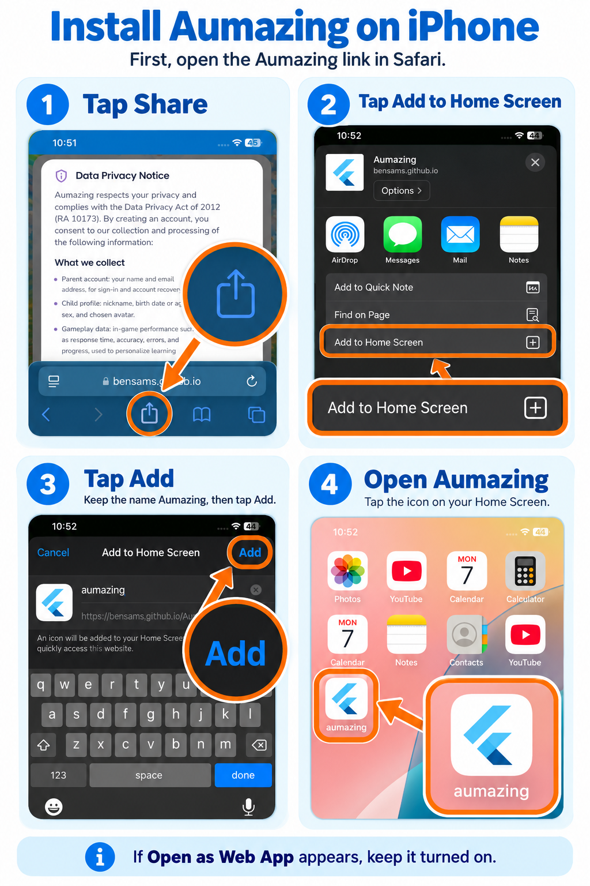

First, open the Aumazing link in Safari.
- Tap ShareTap the Share button in Safari.
- Tap Add to Home ScreenScroll through the Share menu and choose Add to Home Screen.
- Tap AddKeep the name Aumazing, then tap Add.
- Open AumazingTap the Aumazing icon on your Home Screen.

Follow the four steps shown in the guide.
ⓘ If Open as Web App appears, keep it turned on.
View full-size guide